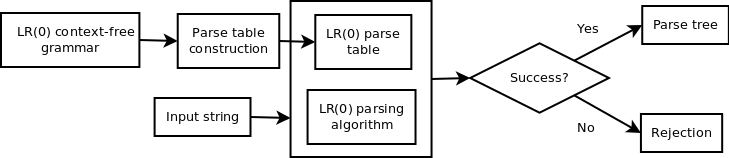

We've seen the process for using a parse table to apply the LR(0) parsing algorithm in order to recognizing a string as part of a context-free language. In this section, we will briefly outline the reasoning for extending our LR(0) parsing knowledge to construct this LR(0) parser.
Previously, we illustrated and formally described the LR(0) parsing process.
In order to apply this process, we needed the following information:
We commonly use context-free grammars to specify context-free languages, including those that are part of the LR(0) subset of this class of languages.
Since the only non-static piece of information we need to recognize such as language is its parse table, if we had the ability to generate this table from the language's grammar, then we would have a streamlined process for constructing LR(0) parse tables (and hence parsers).
The following diagram illustrates the end-to-end of flow of recognizing a string as part of an LR(0) context-free language specified by a grammar:
We've already covered the LR(0) parser structure and parsing algorithm.
Conversely, we have not yet been covered LR(0) parse table construction.
We have gone over the motivation for delving into LR(0) parser construction. Next, we will delve into some of the underlying concepts required to start the parser construction process.
GitHub Repository: https://github.com/bprollinson/ripal
Copyright © 2017 Brendan Rollinson-Lorimer